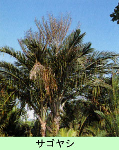

|
第６３ 原住民の飼い犬を食べてしまった
 私共が今いるこの周辺には、サゴヤシの木が沢山茂り、食料の心配はまず無かったが、ジメジメした陰湿な湿地帯で健康には良 くありませんでした。そんな中に少しこ高くなった狭い台地があり、そこにヤシの葉で編んだ小屋を作り、隊員とは離れて、当番 兵と２人で起居していました。この小屋の上空はジャングルで遮蔽されていて、敵機に発見される心配はなかった。それでも日中 は僅かに数条の光が差し込んで来ました。原住民にサゴヤシ澱粉を採集してもらい、サゴヤシ澱粉でウドンを作り、一日三食それ だけを食べていました。調味料は、僅かの塩だけでした。原住民はサゴヤシ澱粉に熱湯を掛け「タニタニ」を作って食べていま したが、私共には腹ごたえがなく、毎日はとても食べられませんでした。そんな毎日が続いていました。ところが、ある日のこと、怒気を含んだキャプテンが、顔色を変えた原住民３名の強そうな男を従え、私の小屋にやって来た。 この様を見た瞬間、これはただ事ではないぞと直感し慄然としました。それでも気を取り直し、わざと悠然と構えていました。小 屋の中に座っている私に向かって、キャプテンがどこか厳しい態度で 『山口キャプテンは我々が飼っている犬を見掛けなかったか？』 と詰問してきた。私の側には部下は一人もいない。色の黒い逞しい４人の原住民が、物凄い形相で私の前に立ちはだかっていて、 余りの気迫に慄然としました。 この頃の戦況は四囲の敵に追い詰められていて、日本軍の敗戦が色濃くなってきていた。この事を原住民は薄々感じ取っていたか ら、私は内心驚異を感じていたのです。 内心の動揺を隠し平然とした態度で、知らぬ存ぜんの一点張りで、なんとか彼等にその場を引き取ってもらうように勤め、暫く押 し問答したあげく、やっとのことで彼等は帰って行った。 彼等原住民の姿が見えなくなってから、すかさず、部下の下士官を呼び付け 『お前たちは原住民の犬を食べなかったか？』と尋ねてみた。すると何たる事か、くだんの下士官は平気な顔で 『はい、犬は食べてしまいました』という。私はびっくり仰天してしまった。兵隊たちは日本軍の今の状況が深刻には分かっていな い。原住民を敵に回したのでは生きては行けない。犬を食べた証拠が彼等に見つかったらそれこそ大変なことになる。即座に 『食べ残した骨、皮、犬の毛は土の中に埋めてしまえ。決して彼等に見つからぬようにするんだッ』 と命じました。指示ではないぞ。隊長の命令だ。と、きつく叱りました。ピンチをのがれてまた、平穏な日が続きました。この当時 は、彼等の協力がなければ、日本兵は１日たりとも生きていけなかった。キャプテンは引き上げて帰ったが、彼等の心中は穏やかで はない筈だと思いました。それからは彼等に何時？襲撃されるかも知れないと考え、夜、寝る時も決して油断はしなかった。何ケ月 か前には、第×中隊長の岡本大尉は原住民に惨殺されるという悲劇も起きていたのである。 |